Installing a Chart
For demonstration a freely available U.S. chart (CAPE SABLE TO CAPE HATTERAS) will be used.
Downloading and installing a U.S. chart
Options  on the tool bar
Charts
on the tool bar
Charts

-
Select the Chart Downloader tab

-
Press Add Catalog
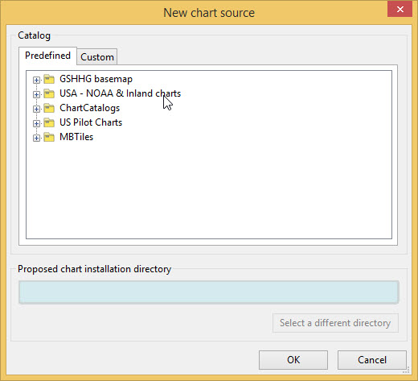
Select USA - NOAA & Inland charts and press OK
Two sets of charts are available, RNC and ENC.
-
RNC are Raster charts, scanned charts with full navigational detail, where the detail cannot be adjusted.
-
ENC Electronic navigational charts where the objects and amount of detail needed can be chosen by the user. These charts are rapidly taking the place of RNC.
ENC is used.
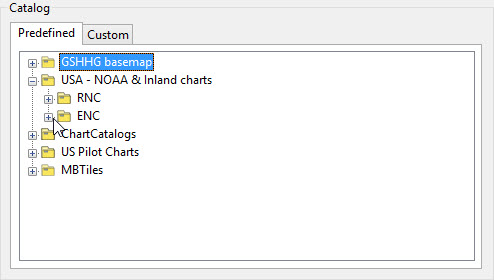
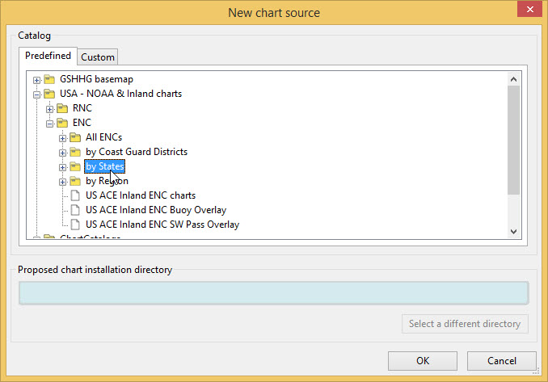
Select "by States"
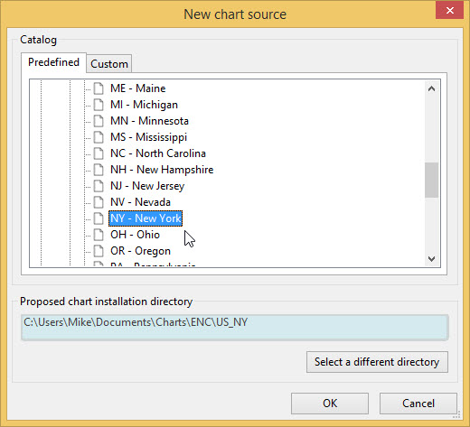
A default entry for the folder for downloaded charts is shown. For simplicity the default is used.
RNC "NY - New York" is selected. Press OK
An entry for New York state appears in the catalog.
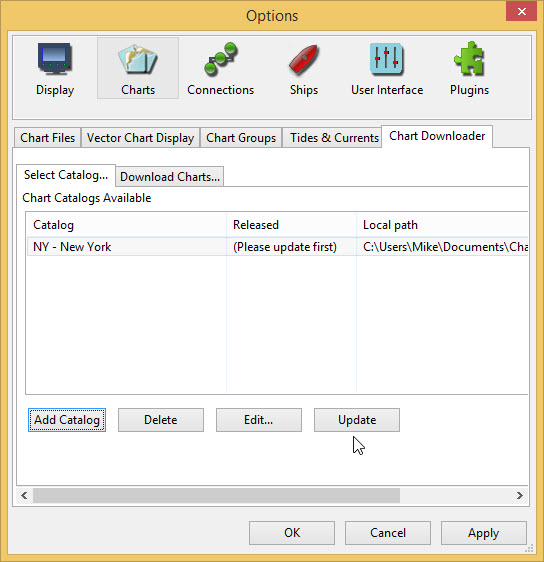
Update
Only one chart is needed CAPE SABLE TO CAPE HATTERAS
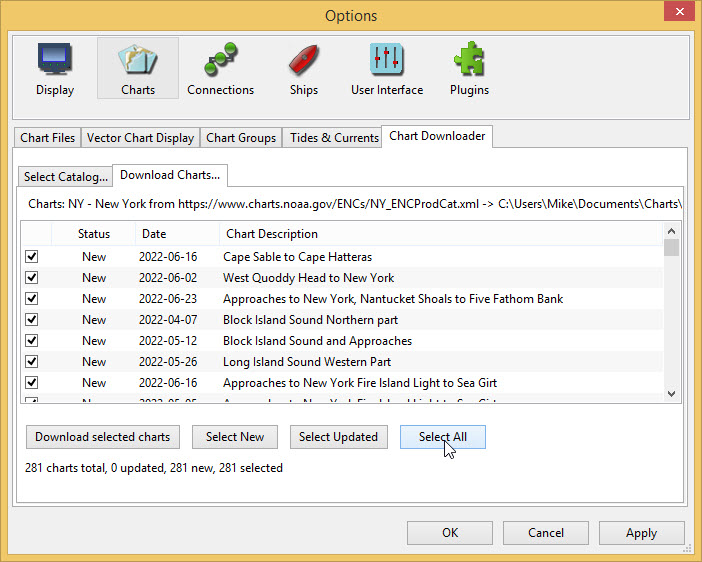
Select All first to allow deselecting all the charts
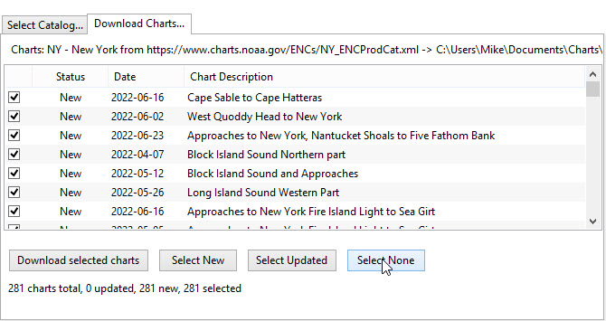
Select None and then select Cape Sable to Cape Hatteras
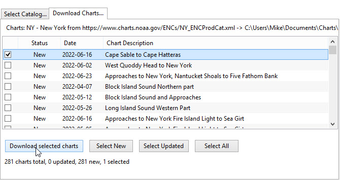
Download selected charts
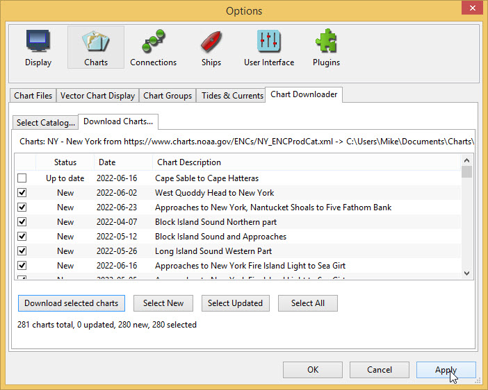
Apply
This returns you to Options
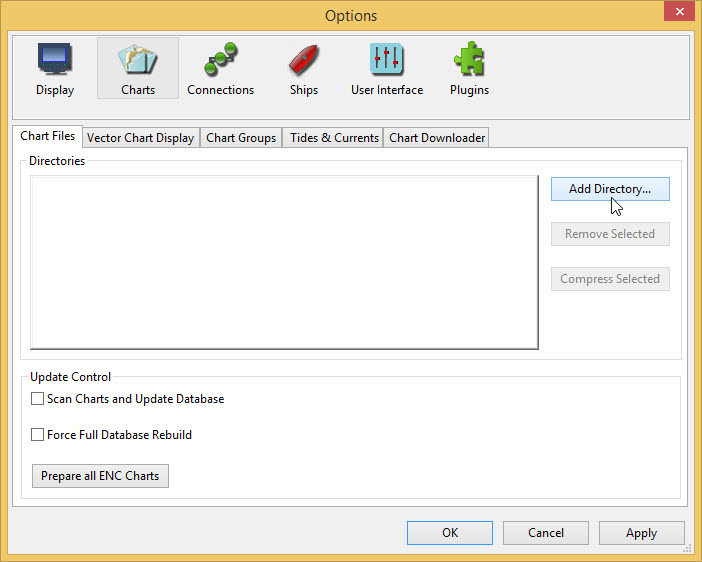
Staying in Options select the Chart Files tab and press Add Directory… Find the folder US_NY where the Cape Sable to Cape Hatteras chart is located
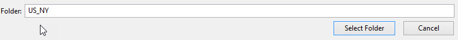
-
Press Select Folder An entry appears in the list of directories
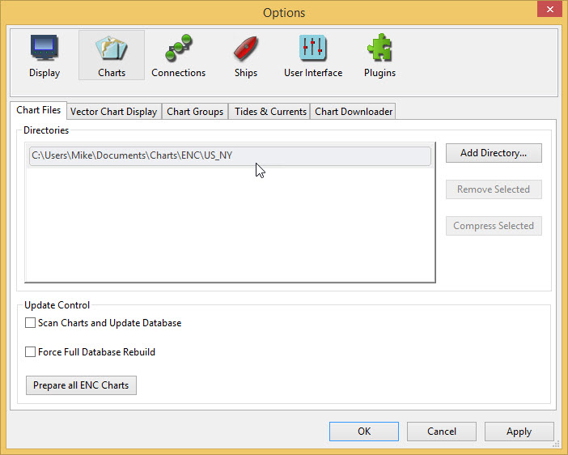
Apply and OK to return to the main screen
Move the base chart until you can see the East Coast of the USA.
-
Drag with the mouse
--OR--
-
Click the arrow 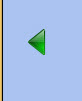 that appears when the mouse pointer is moved to the side of the display
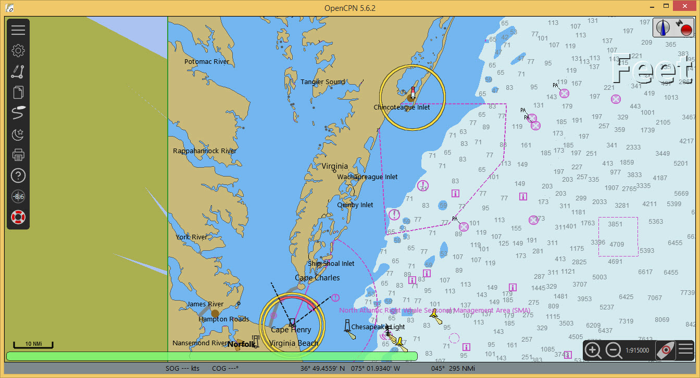
US Charts use the unit Feet for depths and heights.
If you want to change units use Options
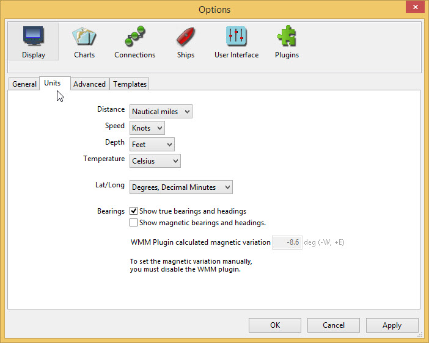
Display and select the Units tab
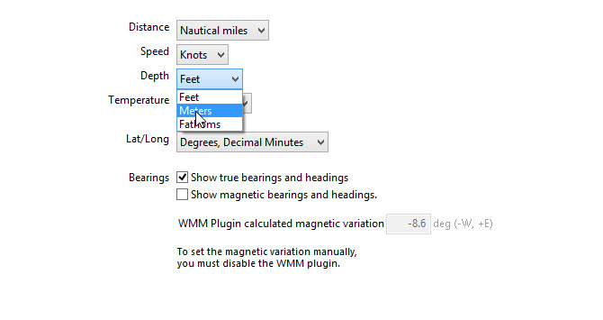
Use the dropdown for Depth to change the unit Feet to Meters
Apply OK
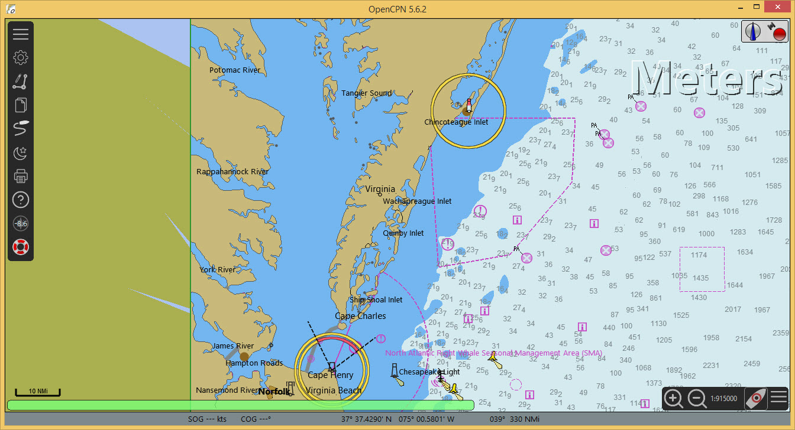
Charts available for OpenCPN are described in the User Manual
Even without a navigational chart a GPS can be connected and tested. This is described HERE.
High resolution base map
To improve the look of the base map a high resolution version can be installed using the chart downloader (Internet connection needed).
Options Charts Chart Downloader Add Catalog
Select GSHHG basemap then All GSHHG basemaps
Use the default installation directory.
OK
Update Download selected charts
Apply OK
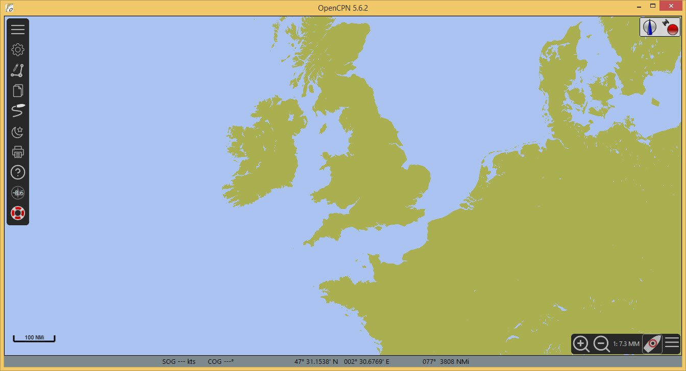